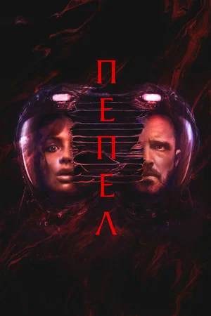

1
Аватар: Пламя и пепел
2025
США, Канада
фантастика, фэнтези, боевик, приключения
3 ч 17 мин

Джейк Салли, Нейтири и их дети переживают смерть Нетейама. Противостояние с корпорацией RDA обостряется,
и теперь семье предстоит столкнуться с враждебным племенем На`ви во главе с Варанг.
2
Анаконда
2025
США
боевик, комедия, приключения
1 ч 39 мин
Группа друзей отправляется в джунгли, чтобы снять ремейк «Анаконды»,
их любимого фильма юности. Однако вскоре после начала съёмок змея, главная звезда фильма, погибает,
и друзьям приходится продвигаться в глубь джунглей, чтобы найти ей замену.
3
Долгая прогулка
2025
США, Канада
триллер, драма
1 ч 48 мин

Уже много лет США ведут изнурительную войну, население нищает,
и для поднятия морального духа в стране проводится ежегодное соревнование «Долгая прогулка».
В нём участвуют пятьдесят молодых людей, которые должны идти со скоростью не ниже трёх миль в час,
а после трёх нарушений участник выбывает. Победителем станет последний оставшийся,
и он получит крупную сумму и исполнение одного желания. Помимо других «счастливчиков» в новой игре
принимает участие Рэймонд Гэррети, и он не спешит рассказывать попутчикам,
какое желание загадает в случае победы.
4
Никто 2
2025
США, Канада
боевик, комедия, криминал
1 ч 29 мин

Разобравшись с русской мафией и уничтожив денежный склад, Хатч расстроил влиятельных людей,
деньги которых сгорели в огне. Теперь, чтобы компенсировать потери, он снова работает киллером.
После очередного сложного заказа Хатч просит босса о передышке. Он хочет взять отпуск и побыть с семьёй,
от которой снова отдалился. Приехав с роднёй в небольшой курортный городок, где он однажды побывал в детстве,
мужчина наслаждается безмятежным отдыхом, не подозревая, что скоро неприятности найдут его и здесь.
5
Пепел
2025
США
фантастика, ужасы
1 ч 36 мин

Рия приходит в себя на расположенной на другой планете станции.
Девушка с трудом собирает обрывки воспоминаний: она прилетела сюда в составе
экспедиции в поисках пригодной для жизни планеты, а теперь станция разгромлена,
часть экипажа убита, часть пропала. Вскоре прибывает коллега с орбитальной станции
и пытается убедить Рию покинуть планету, но она упрямо хочет разобраться в произошедшем.
6
Хищник: Планета смерти
2025
США, Австралия, Новая Зеландия, Канада, Германия
фантастика, боевик
1 ч 48 мин

В глазах воинственного отца молодой хищник Дек — полное ничтожество и позор клана.
Отец приказывает старшему сыну убить его, но тот ценой собственной жизни спасает брата
и отправляет его на населённую агрессивными тварями планету Генна. Там Дек встречает
располовиненную девушку-андроида Тию, некогда прибывшую сюда в составе экспедиции с Земли,
и, чтобы доказать отцу свою состоятельность в качестве охотника, вместе с ней отправляется
на поиски считающегося непобедимым жуткого зверя калиска.
7
Военная машина
2026
Великобритания, Австралия, Новая Зеландия, США
фантастика, боевик
1 ч 46 мин

Кандагар, Афганистан. Во время ремонта боевой машины отряд армии США попадает под артобстрел талибов.
Выживает лишь сапёр инженерной бригады, получив серьёзную травму ноги и потеряв в той бойне младшего брата.
Спустя 2 года он приезжает в Колорадо в лагерь подготовки рейнджеров, чтобы попытаться пройти тяжёлый отбор
и исполнить мечту погибшего брата. В ходе последнего испытания подразделение кандидатов в рейнджеры со специальным
оружием для стрельбы холостыми вместе с тем самым сапёром, которого назначили командиром группы, сталкивается
с огромным боевым роботом неизвестного происхождения, который вступает с ними в бой.
8
На помощь!
2026
США, Канада, Великобритания, Австралия, Таиланд
триллер, комедия
1 ч 53 мин

Линда Лиддл, сотрудница отдела стратегического развития, справедливо считает себя
очень полезной сотрудницей и рассчитывает на повышение. Вот только в офисе она всех
раздражает, и когда после смерти пожилого президента компании это место занимает его сын Брэдли,
обещанная Линде должность уходит другому. Вскоре делегация фирмы отправляется в командировку в Бангкок,
самолёт терпит крушение, и единственными выжившими на небольшом тайском острове оказываются Линда и Брэдли.
Будучи фанаткой шоу о выживании, женщина сразу берёт ситуацию в свои руки.
9
Невеста!
2026
США, Франция
фантастика, драма, мелодрама
2 ч 6 мин
Чикаго, 1930-е годы. Монстр Франкенштейна просит доктора Юфрониуса помочь создать
ему компаньона. Вместе они оживляют убитую девушку, и она превосходит их ожидания.
10
Проект «Конец света»
2026
США
фантастика, комедия, драма, приключения
2 ч 36 мин

Микробиолог Райленд Грейс просыпается на космическом корабле, не помня ни себя,
ни свою миссию. Мужчина выясняет, что он — единственный выживший из экипажа,
отправленного к звезде Тау Кита в поисках спасения от катастрофы на Земле.
Чтобы найти решение, Райленду предстоит положиться на свои обширные научные знания
и изобретательность, но, возможно, ему не придётся искать в одиночку.